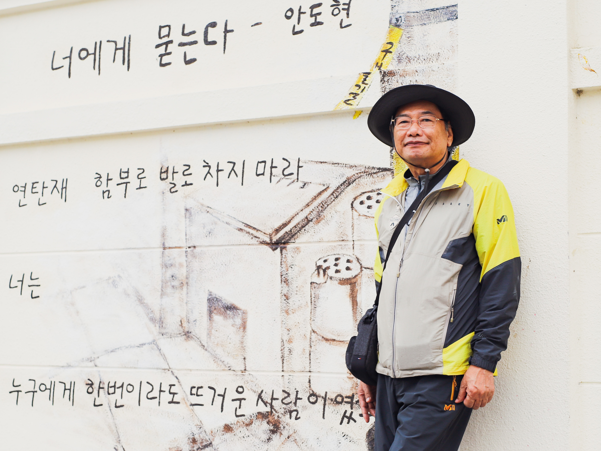
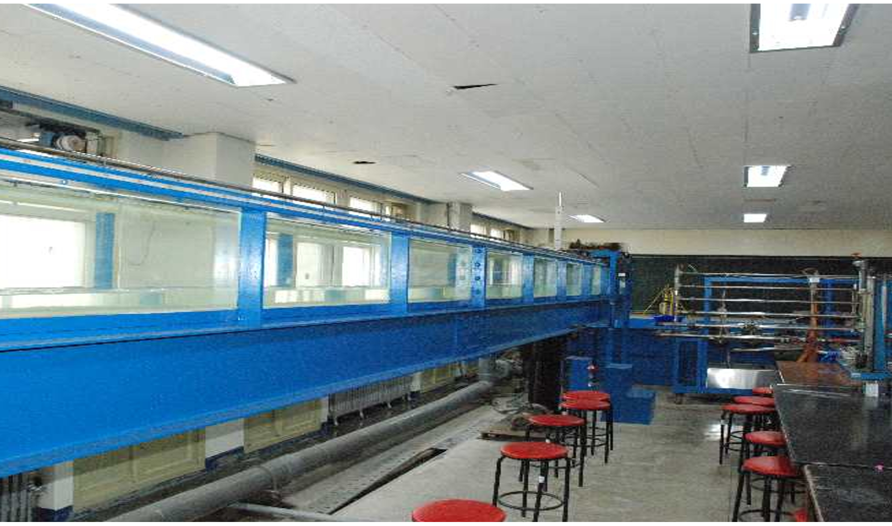
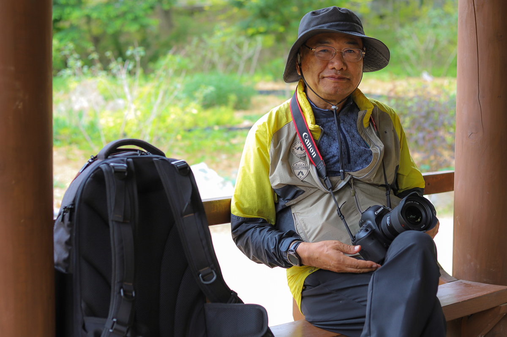
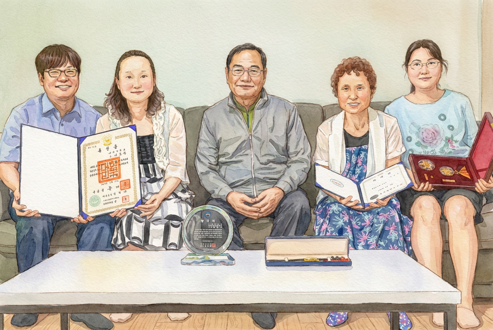

Biografie

- 1952
- Geboren in Sanghwa-myeon, Gochang-gun, Jeollabuk-do, Südkorea
- 1958 – 1970
- Abschluss an Daeheung-Grundschule, Honam-Mittelschule und Honam-Gymnasium in Jeongeup
- 1974
- B.Sc. Bauingenieurwesen, Jeonbuk National University
- 1974 – 1978
- Mathematiklehrer, Taein Mittel- & Oberschule
- 1974 – 1993
- Lehrbeauftragter und Professor für Meeresbauingenieurwesen, Technische Hochschule Kunsan & Fischereihochschule
- 1979
- M.Sc. Bauingenieurwesen, Jeonbuk National University
- 1986 – 1987
- Gastprofessor, Fachbereich Meeresbauingenieurwesen, Tokai-Universität, Japan
- 1990
- Dr.-Ing. Wasserbau, Jeonbuk National University
- 1990 – 1991
- Entsandter Professor im Rahmen des koreanisch-deutschen Technologiekooperationsprogramms
- 1993 – 2020
- Professor für Bauingenieurwesen, Kunsan National University
- 2020
- Emeritierung an der Kunsan National University — 46 Dienstjahre, Orden für Zivilverdienste (Gelbe Streifen)
- 2024
- Verstorben
Forschung & Publikationen

- 1979. 8
- Masterarbeit — „Studie zur wirtschaftlichen Bestimmung von Rohrdurchmessern in Verteilungsnetzen", Jeonbuk National University
- 1990. 8
- Dissertation — „Anwendung des Boundary-Fitted-Koordinatensystems auf ein zweidimensionales Gezeitenmodell und Parameteridentifikation", Jeonbuk National University
- 2009. 7
- Fachbuch — EFDC-Praxisleitfaden, Verlag Gumi Seogwan
Fotografisches Schaffen

- 2017
- Beginn der Fotografie — Kauf einer Canon EOS 6D Mark II
- 2018
- Studium der Wasserlicht-Fotografie am Gunsan Lifelong Learning Center
- 2018
- Beitritt zur Gunsan Wasserlicht-Fotografievereinigung
- 2019
- 14 Auswahlen bei nationalen Fotowettbewerben, 8 Auswahlen bei nationalen Fotografiewettbewerben
- 2019
- Bronzepreis beim Nationalen Fotografiewettbewerb des Horizont-Festivals
- 2020 – 2021
- Vizepräsident, Gunsan Wasserlicht-Fotografievereinigung
Familie

- 1977. 12
- Heirat
- 1978. 9
- Erste Tochter geboren
- 1979. 11
- Zweite Tochter geboren
- 1985. 2
- Sohn geboren
Gedenkstätte
Yeongwoldang, Dalmasa-Tempel (Jogye-Orden des koreanischen Buddhismus)
50-26, Seodal-ro, Dongjak-gu, Seoul, Republik Korea
{kind=link}
{kind=link}
{kind=link}
{kind=link}